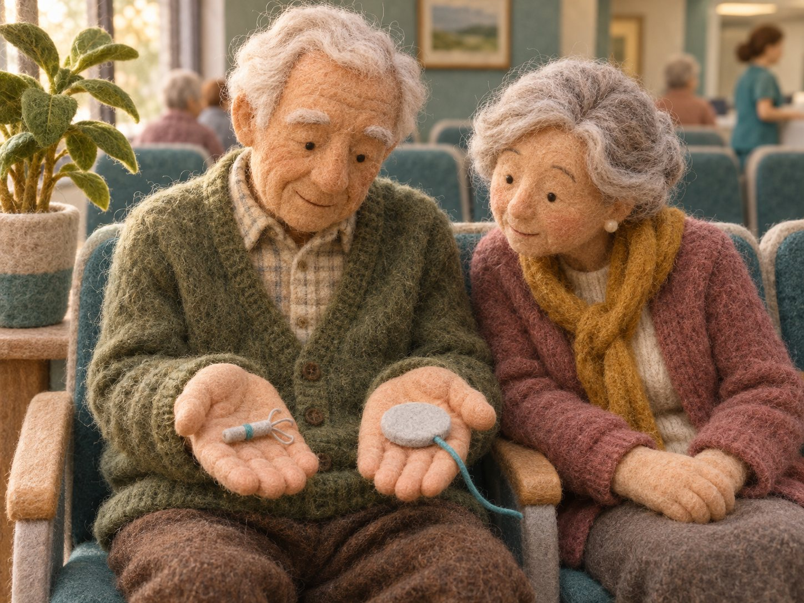
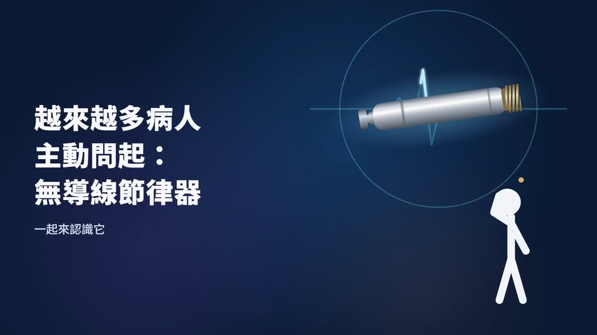

心跳太慢（心跳過慢）怎麼辦？心臟節律器怎麼選

本文最早寫於 2021 年。2026 年 12 月 1 日起，健保無導線節律器依心跳慢的原因分心房型、心室型申請，只給付裝不了傳統節律器的人，以健保署最新公告為準。
本篇重點
心跳過慢不一定要裝心臟節律器，如果原因是藥物副作用或電解質異常，常常可以逆轉。如果心跳持續過慢，又有頭暈、喘或血壓不穩，就要考慮心臟節律器。目前台灣有傳統有導線和新型無導線兩種機型，哪一種適合，要由心臟科醫師依病人的需求和疾病嚴重度一起討論分析。
心跳過慢有哪些症狀和原因
一般人的心跳約每分鐘 60 到 100 下。心跳低於標準時，可能出現頭暈、胸悶、喘或全身無力，嚴重時會昏倒。常見的原因包括老化、心肌梗塞、電解質異常，以及藥物。如果心跳過慢，又合併上面這些症狀，要趕快就醫評估。
什麼時候需要節律器
醫師會先找可以逆轉的原因，例如藥物或電解質。處理之後症狀還在，或是心跳持續過慢並合併頭暈、喘、血壓不穩，才會考慮植入節律器。節律器會在心跳太慢的時候，發出微小的電訊號讓心臟跳起來。新型的節律器能依您當下的活動量調整心跳，走路、上樓梯時心跳跟得上；搭配居家監控，心跳資料還能上傳雲端，讓醫師掌握狀況。
傳統有導線與無導線有什麼差別
- 傳統節律器：機器放在胸前皮下的口袋，用導線連到心臟。
- 無導線節律器：差不多一顆膠囊大小，從大腿根部的靜脈用導管送進右心室，直接固定在心室壁上。胸前沒有傷口、沒有導線，也不影響手臂的活動。
沒有導線，就沒有導線斷裂磨損的問題；沒有口袋，就沒有口袋感染的問題。放無導線或傳統節律器都是經血管進到心臟的手術，心臟穿孔、出血這類風險兩者都有；無導線節律器也有自己的風險，例如裝置位置不穩。新竹馬偕醫院從 2017 年 8 月開始引進膠囊型的無導線節律器，當時的報導提到它體積約 0.8 立方公分、重約 2 公克。
這些差別也關係到生活品質：傳統節律器的電池主機在胸前皮下，有些體型纖細的人看得出凸起，日後每次換電池，都會將原本的傷口反覆開合。在意這些生活細節的人，即使要自費，也可以把無導線節律器列入和醫師討論的選項，完整說明請看〈想顧生活品質，無導線節律器值得考慮嗎？〉。
哪些人適合無導線節律器
無導線節律器現在分三種：放在右心室的心室型，適合心房顫動合併心跳過慢；放在右心房的心房型，以及心房、心室各一顆的雙腔系統，適合病竇症候群、房室傳導阻滯這類需要心房和心室照順序跳的人。病竇症候群的問題在心房，國際指引首選能照顧心房的節律方式；早期無導線只有心室型，現在已經可以選。健保 2026 年 12 月 1 日起把心房型寫進給付規定，但只限裝不了傳統節律器的人；多數人想裝無導線，要自費。詳細比較請看無導線節律器主題館。
無導線節律器的健保給付，健保只給付裝不了傳統節律器的人，這只是少數；多數想裝無導線節律器的人是自費。2026 年 12 月 1 日起，健保依心跳慢的原因分三種申請：問題在心房（病竇症候群）、心房到心室的傳導還正常，申請心房型；長期的心房顫動（持續性或永久性）合併房室傳導阻滯，申請心室型，先裝了心房型、後來才出現房室傳導阻滯的人，也可以再申請心室型；房室傳導阻滯、但沒有長期的心房顫動，心房還能正常跳，申請能感應心房的心室型。「裝不了傳統節律器」是指例如兩邊鎖骨下的靜脈塞住、上腔靜脈變窄或塞住、有洗腎用的廔管或導管、胸前放了化療用的人工血管，或胸前裝置的位置曾經感染、開刀清創，胸前做過腫瘤切除、放射治療，或有嚴重燒燙傷。醫院會先幫病人送健保審查，通過才能用健保。不符合條件的人，可以選擇自費。詳細條件請以健保署現行公告為準。
電池用完怎麼辦，能做核磁共振嗎
無導線節律器的電池壽命依機型與起搏比例而不同，廠商提供的使用年限是推估，不是長期追蹤的結果。如果幾乎每一下心跳都要靠它來起搏，電池就會用得比較快，所以裝完之後要定期回診檢查電量。電池用完時，有兩種做法：把舊的留在原處停用、在旁邊再放一顆新的，或是取出舊的再植入新的；醫師會依手術風險來選擇。新型節律器已經突破過去不能做核磁共振的限制，但必須是相容的機型並依規定設定，檢查前請告訴醫院您裝有節律器。
裝完以後要注意什麼
傷口如果發紅、發熱、腫脹、疼痛，或有液體流出，要儘快就醫。要定期回診檢查，接受其他治療時主動出示節律器的識別卡；平常保持健康的生活型態，避免吸菸、少喝酒，對心臟整體健康有幫助。
本文為一般衛教，不能取代門診評估；要裝哪一種節律器，請和您的心臟科醫師討論。
一張表看懂
傳統有導線節律器和無導線節律器在放置方式與風險上有這些差別。
| 比較項目 | 傳統有導線節律器 | 無導線節律器 |
|---|---|---|
| 放置方式 | 機器放在胸前皮下的口袋，用導線連到心臟。 | 裝置差不多一顆膠囊大小，從大腿根部的靜脈用導管送進右心室，直接固定在心室壁上。 |
| 胸前傷口 | 機器放在胸前皮下的口袋裡。 | 胸前沒有傷口、沒有導線，也不影響手臂的活動。 |
| 導線與口袋 | 裝置有導線和皮下口袋，可能出現導線斷裂磨損或口袋感染的問題。 | 沒有導線，就沒有導線斷裂磨損的問題；沒有口袋，就沒有口袋感染的問題。 |
| 手術風險 | 這是經血管進到心臟的手術，有心臟穿孔、出血這類風險。 | 這同樣是經血管進到心臟的手術，有心臟穿孔、出血這類風險，也有裝置位置不穩這類自己的風險。 |
常見問題
心跳過慢一定要裝心臟節律器嗎？
心跳過慢不一定要裝節律器。原因是藥物副作用或電解質異常時，常常可以逆轉；如果心跳持續過慢，又有頭暈、喘或血壓不穩，就要考慮心臟節律器。
無導線節律器健保給付的條件是什麼？
只給付少數人：裝不了傳統節律器的人，例如血管塞住或變窄、有洗腎用的廔管或導管，或胸前裝置處感染開過刀、做過放射治療，並先通過健保審查。2026 年 12 月 1 日起，健保依心跳慢的原因分心房型、心室型等三種申請。其他人想裝，要自費。
裝心臟節律器後傷口紅腫或流液體該怎麼辦？
裝完心臟節律器後，傷口如果發紅、發熱、腫脹、疼痛，或有液體流出，要儘快就醫。平常要定期回診檢查，接受其他治療時主動出示節律器的識別卡。

參考資料
- 健保署：無導線心律調節器給付規定修正對照表（B101-3、B101-4、B101-6，2026 年 12 月 1 日生效）
- 全民健康保險特殊材料給付規定修正對照表 B101-3 無導線心律調節器（健保署，2022-05-01 生效）
- 中華民國心律醫學會 心律不整衛教網：心房顫動之藥物及非藥物治療（含節律器說明）
- 今健康：心跳過慢有猝死風險？心臟節律器怎麼選？（林柏霖醫師受訪，2021）
- 元氣網（聯合新聞網）：心律異常患者新選擇 新竹馬偕引進無導線調節器（2018-07-05）
每個人的狀況不同，文章不能取代門診評估。想知道自己適不適合，歡迎帶著過去的檢查報告來門診討論。